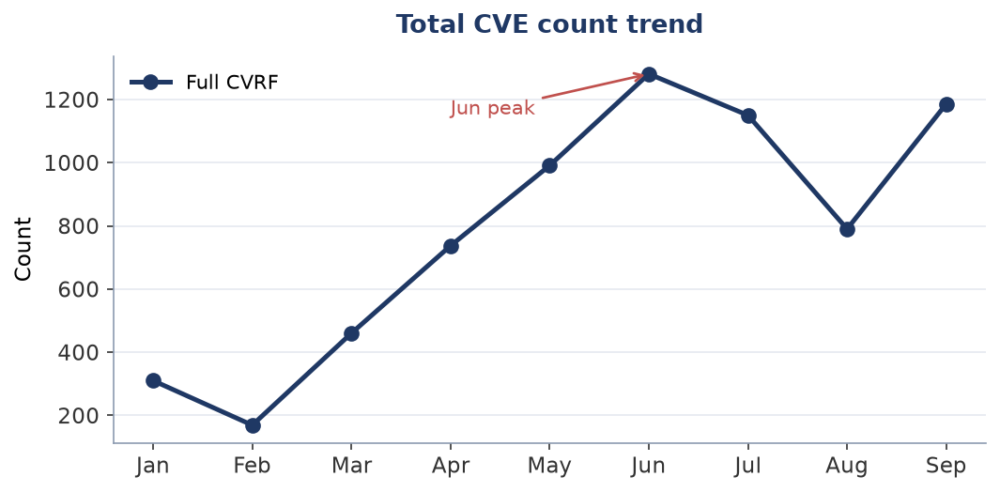
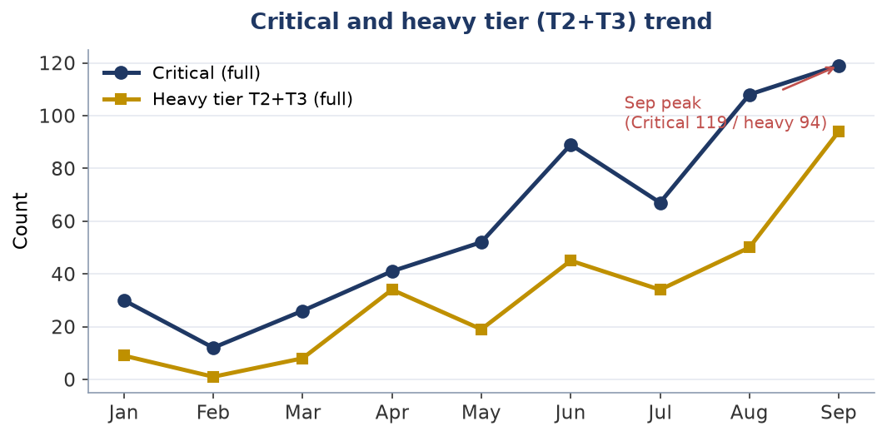
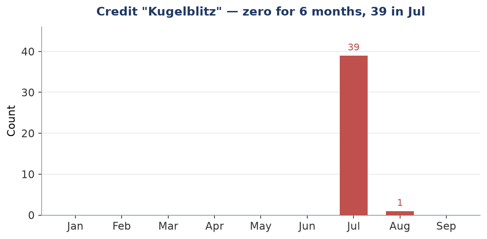
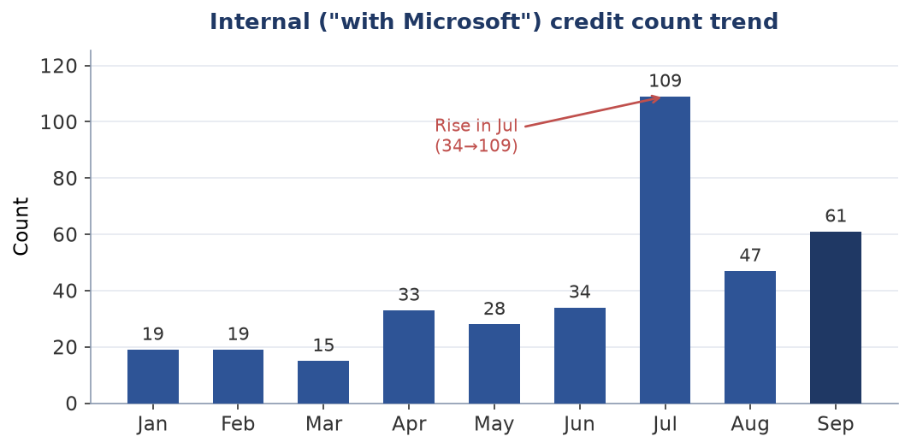

Technical report (machine-generated facts + human interpretation)
The surge in vulnerability discovery by frontier AI
A situational analysis as of September 2026, with implications for practitioners
Practitioners and decision-makers responsible for vulnerability and patch management
About this report's structure and dates This report is composed by injecting human interpretation into a factual record (figures, tables, charts) generated by an automated monitoring script. Fact data acquired: 2026-09-10 (frozen as a snapshot) Interpretation (analysis) updated: 2026-09-10 Note: facts are automatic, interpretation is updated separately by a human. If the two dates are far apart, the interpretation may not reflect the latest facts. |
On MSRC's after-the-fact revisions This report is based on values finalized on 2026-09-10. MSRC revises past months after the fact (e.g., June CVE 1281→1205), so post-revision data may appear to give different results. Revision records are retained separately. |
[Disclaimer / Sources] • This report is an informal analysis by a hypothetical author projecting a practitioner responsible for vulnerability response; it is not the view of any specific individual or organization. • Fact data sources: Microsoft MSRC CVRF, CISA KEV, and other public information. • The analysis is generated with AI (a large language model). Facts are verified where possible, but accuracy and completeness are not guaranteed. Confirm important judgments against primary sources. • Facts are auto-updated but interpretation is updated as needed; the two dates may be far apart (see header). • Freshness: the facts in this report are as of 2026-09-10. KEV and PoC status change moment to moment; consult primary sources for the latest. |
[Note on neutrality] This report's analysis is generated using Anthropic's AI (Claude). The report refers to that company's Project Glasswing and the like, but this is intended as neutral description based on public information and does not endorse or advocate for any specific company. Readers should consult primary sources and judge independently. |
Executive summary
September 2026's Patch Tuesday rose on every axis: 790 to 1,186 across all CVRF, 420 to 975 in core Microsoft. The tier requiring change control set another record. The shape the previous issue described — a smaller count carrying more weight — does not hold this month.
And this month a defect turned up in how this report decides what to look up in KEV and EPSS. Vulnerabilities under confirmed exploitation were not in the set being matched at all. They were dropped because Microsoft had found them itself. Counting back over nine months, eight were missed, and seven of those for that same reason.
Every defect corrected until now was a rule doing something other than what it was meant to. This one is not. The rule did exactly what it was written to do, and the reason for excluding was the reason for paying attention.
Conclusion in one line Everything rose this month. And our own filter was dropping confirmed-exploited vulnerabilities on the grounds that the vendor found them. |
Terms: "all CVRF" and "core Microsoft" All CVRF — every CVE in MSRC's monthly document, including Edge/Chromium, Azure Linux package advisories, and Azure cloud re-listings. Press tallies disagree because they cut this population differently. Core Microsoft — all CVRF with only Edge/Chromium and the Azure Linux package advisories removed. Azure cloud re-listings stay in core (the twelve azure_cloud CVEs). The split resolves product identifiers to product names and does not read the CVE title. This month: 975 core against 211 excluded (187 Azure Linux, 24 Edge/Chromium) — the excluded figures reconcile exactly. |
Analysis: a month that grew, and a hole on our side
The figures moved the opposite way from last month. And a defect was found in this report itself.
|
August 2026 |
September 2026 |
All CVE |
790 |
1,186 |
Core Microsoft |
420 |
975 |
Credited |
405 |
926 |
Heavy tier (T2+T3, core) |
42 |
93 |
Zero-days |
3 (1 exploited) |
2 (**both exploited**) |
The 2.3-fold rise in core is real data. It was checked, because it is exactly the shape the old classifier's failure took: 1,024 CVEs had their first revision on Patch Tuesday itself against 635 last month, and the leading core product names are Windows Server 2025, Windows Server 2022 and Windows 11 24H2 — the core itself. This is not Azure Linux leaking back in.
Zero-days fell to two, and both are confirmed exploited. Last month, one of three was.
What gets exploited is not Critical — three months running
Both of this month's zero-days are rated Important, and both are elevation of privilege. None of the month's 119 Critical items is confirmed exploited.
The same held in each of the two months before. For three months running, a triage that reads Critical and stops has dropped the item actually being exploited.
And two months ago, one of the two exploited items was rated Moderate. Reading down to Important would still have dropped it. Across these three months, no cut by severity label alone comes away clean.
Both were listed in CISA KEV on Patch Tuesday itself, with remediation due two weeks out. Three months running, MSRC's disclosure and the KEV listing land on the same day. But the remediation window is not a constant. Two months ago one item had three days. Do not read "in KEV" as "two weeks".
The core of it: the reason for excluding was the reason for attention
This report looks up KEV and EPSS against a filtered set rather than every CVE in the CVRF. The intent was to drop Edge's long tail and cut both API load and noise. That intent was sound.
The condition was not. The set was "heavy tier (T2/T3) or Critical or externally credited" — three tests, and whether exploitation was confirmed was not among them.
Recounting nine months: eight CVEs were under confirmed exploitation and outside the set. Seven of them carried a Microsoft internal credit. Not Critical, not in the reboot-heavy tier, no external credit — so they fell out.
For a vulnerability under confirmed exploitation, "the vendor found it themselves" is not a reason to look less closely. And the most direct reason there is to consult KEV — that the vendor says it is being exploited — was not in the condition.
Every defect corrected until now was a mismatch between rule and intent. The population split could not see advisories whose titles carried no product name; the category classifier could not follow a change of upstream notation. This time the rule ran exactly as written. Implementation matched intent; the intent was wrong.
It was fixed by adding one condition. The cost is close to nothing — this month's set stays at 786, and two months ago it goes from 457 to 458. Those eight had been falling out for nine months.
Implications and recommended actions
These are recommendations drawn from this report's analysis, not settled regulatory requirements. Specific supervisory expectations should be confirmed against primary sources.
1. What to monitor (continued)
Do not use CVE count as a threat indicator. This month it rose by half, and that corresponds neither to defensive load nor to risk.
Track the tier requiring change control instead. It went from 42 to 93 in core — more than double. Allow more time for deployment planning than last month.
But a count is not an amount of work. How far the scope spreads across products changes the effort, and this report does not measure that distribution (the same limit as last month).
2. Decouple triage from the severity label (continued, reinforced)
None of this month's 119 Critical items is confirmed exploited; both confirmed items are Important. The same shape has now appeared three months running.
Two months ago one of the two exploited items was Moderate. Reading down to Important would still have missed it.
The destination is unchanged: CISA KEV, EPSS, and asset reachability in combination.
3. Emergency patch SLA
Both of this month's exploited zero-days were listed in KEV on Patch Tuesday, due two weeks out. They are same-day items.
Both have the same precondition shape. Per the vendor, each requires local authentication, but the privilege needed is that of an ordinary user, no user interaction is required, and success yields SYSTEM. Last month's single item was rated high in attack complexity (it required winning a race); both of this month's are rated low.
One of them (the ALPC issue) is stated by the vendor to allow escape from a low-privilege sandbox. That is a direct link in a browser-originated chain. It affects twenty product versions, reaching back nearly eight years.
The remediation window varies by month. Two months ago one item had three days. When something lands in KEV, read the date rather than assuming.
4. Let confirmed exploitation override your own filter (new this issue)
This recommendation comes out of this report's own defect. When you match external threat intelligence against your estate, check how the thing being matched is filtered.
If the filter is built only from proxies — high severity, externally reported — then a confirmed-exploited vulnerability the vendor found itself will fall out.
"Confirmed exploited" overrides every other condition. Put it first, as the exception to the filter.
5. Edge/Chromium auto-update (continued)
This month's Edge advisories number 24. They cannot be set against last month's. August ran the v1 product classification, which read the Edge advisory title — and last month was precisely when that format changed, so the classification was not working and the frozen figure reads 1 (the real advisories sit inside the 334 under "Other"). The same reason that bars a comparison of Table 5 bars this number too.
The point does not depend on the count. Electron/CEF-embedded applications (Teams, Slack, VS Code and others) do not benefit from the browser's auto-update. Enumerating those dependencies in an SBOM is worth as much either way.
6. Business continuity for AI dependence (continued)
Where AI sits in a workflow, treat dependence on a top-tier model as a continuity concern, and make model redundancy and fallback the default.
Primary-data breakdown — September 2026 Patch Tuesday
The following is a tally of primary data acquired from MSRC CVRF v3.0 (frozen snapshot 2026-09-10). The population is shown both as "full CVRF" and as "core Microsoft", the latter excluding Edge/Chromium and Azure Linux. Azure cloud is not excluded — the v2 classifier decides on affected products, and the twelve azure_cloud CVEs sit in core. Figures and tables are generated from the state; the following are fact-based key points attached to each table.
Table 1. By severity (two populations shown)
Severity |
Full CVRF |
(%) |
Core MS products |
(%) |
Critical |
119 |
10% |
114 |
12% |
Important |
913 |
77% |
861 |
88% |
Moderate |
112 |
9% |
0 |
0% |
Low |
18 |
2% |
0 |
0% |
Unrated |
24 |
2% |
0 |
0% |
Total |
1186 |
100% |
975 |
100% |
Table 1 (by severity) — key point
Critical rose from 108 to 119, but the all-CVRF base also rose from 790 to 1,186, so the share fell from 13.7% to 10.0%. Five of the 119 are Azure Linux package advisories; core Critical is 114. That breaks down as 82 remote code execution, 27 elevation of privilege and 2 information disclosure — and none of them is confirmed exploited.
Table 2. By reboot class (the operational-workload axis)
Class |
Description |
Full CVRF |
Core MS products |
T3 |
Staged rollout required (Boot/Crypto) |
5 |
4 |
T2 |
Requires change management / maintenance window |
89 |
89 |
T0/T1 |
Auto-update / steady pipeline |
1092 |
882 |
Table 2 (by reboot class) — key point
T2 and T3 together — the heavy tier — total 93 in core, the highest in this report's observation window (from January 2026), against 42 last month and 33 the month before. The base grew too, so the share is 9.5%, but this tier requires change control and a maintenance window, so the absolute number is what lands in a plan. This report does not measure how those 93 are distributed across products; the highest count cannot be read as the heaviest month.
Table 3. Finder major categories (full CVRF)
Category |
Count |
(%) |
Note |
Uncredited |
260 |
22% |
May include automation (not asserted) |
External researchers (named) |
705 |
59% |
Named external finders |
Anonymous |
92 |
8% |
Self-identified anonymous |
Internal (with Microsoft etc.) |
61 |
5% |
Includes Kugelblitz/MORSE/WARP/ACS |
Hash identifier |
68 |
6% |
MS-anonymized identifier (identity unknown) |
Table 3 (by discoverer bucket) — key point
External credits went from 275 to 705, and uncredited CVEs from 385 to 260. Last month uncredited stood at 48.7% of all CVRF, and 47% within Critical. This month runs the other way. What was not established last month is still not established. The reversal is recorded as a fact and nothing more.
Table 4. Finder breakdown of Critical vulnerabilities (aggregated, no names)
Discoverer |
Critical count |
Tendency |
External researchers (named) |
62 |
Majority of Critical |
Internal (ACS/WARP/MORSE) |
22 |
Few (mainly Networking/Hyper-V) |
Anonymous |
16 |
— |
Uncredited |
10 |
Possibly automation (not asserted) |
Hash identifier |
9 |
— |
Kugelblitz (Edge, ref.) |
0 |
Does not appear in Critical (surface only) |
Counts only (no personal names stored in the fact data). The top rows are per-bucket and sum to the Critical total. The Kugelblitz row is a cross-cutting reference (not additive). Individual researcher names and CVE examples are given as prose in the interpretation.
Table 4 (discoverers of Critical) — key point
Last month 51 of 108 Critical items (47%) carried no credit, and a re-fetch twenty-four hours later moved that by zero, so it was recorded as the month's actual state. This month moves with Table 3. What this indicator reflects is still unknown. Following the discipline established earlier, no inference is drawn about who found something from the absence of a credit.
Table 5. By product category (full CVRF)
Category |
Count |
(%) |
Win Services/Components |
314 |
26% |
Azure Linux (re-listing) |
187 |
16% |
Kernel/Driver |
147 |
12% |
Office/Word/Excel/PPT |
125 |
11% |
Networking |
104 |
9% |
SQL/Dynamics |
64 |
5% |
Microsoft (other) |
47 |
4% |
Other |
40 |
3% |
RDP/Remote |
32 |
3% |
Graphics/Media |
29 |
2% |
Edge/Chromium |
24 |
2% |
.NET/Dev |
22 |
2% |
Auth/Identity |
16 |
1% |
Exchange |
12 |
1% |
Azure/Cloud |
12 |
1% |
Hyper-V/Virtual |
7 |
1% |
Boot/Crypto (T3) |
4 |
0% |
Table 5 (by product category) — key point
From this issue, this table is generated from a product-identifier classification. Until the previous issue it read the CVE title, and last month Microsoft changed the Edge advisory title format, leaving the classification non-functional. This month "Other" holds 40 items, all of them genuinely in scope but without a rule — that is, readable as the list of rules to add.
Do not place it beside last month's Table 5. Last month's 334 "Other" came from the old classification and included Azure Linux advisories. The population and the method both differ from this month's 40. The figures look like a large improvement and are not: only the classifier version changed. The generator prints no legacy warning on this issue, so this caveat is the prose's to carry.
Appendix: an inventory of credits suggesting "AI"
The credit name "Kugelblitz" appeared discontinuously in July, from zero to 39, then once in August, and zero this month. In none of the three months does it appear against a Critical item.
That progression cannot be interpreted. All 39 in July were attached to Edge advisories, and the Edge count itself swings widely month to month. "AI-derived discovery stopped" is not what can be said; "that name stopped appearing" is.
As recorded previously, nothing is inferred about what such a credit name is. The July issue asserted it was a particular in-house AI tool and withdrew that against primary sources. What was counted is a match on a credit string, and nothing else.
Comparison with historical data — the January–September 2026 trend
The conditions for month-on-month comparison hold only between last month and this one. Both are computed with the product-identifier classifier and frozen at the same distance from Patch Tuesday (two days after). June and earlier differ in both classifier and freeze distance. That is why the "core Microsoft" column has been dropped from the trend table; every axis plotted below is independent of the classifier.
Trend table (only real numbers robust to acquisition lag)
Month |
CVE full |
Critical |
Heavy(T2+T3) |
Kugelblitz |
Internal(MS) |
Jan |
310 |
30 |
9 |
0 |
19 |
Feb |
169 |
12 |
1 |
0 |
19 |
Mar |
460 |
26 |
8 |
0 |
15 |
Apr |
737 |
41 |
34 |
0 |
33 |
May |
991 |
52 |
19 |
0 |
28 |
Jun |
1281 |
89 |
45 |
0 |
34 |
Jul |
1150 |
67 |
34 |
39 |
109 |
Aug |
790 |
108 |
50 |
1 |
47 |
Sep |
1186 |
119 |
94 |
0 |
61 |
Note: the 'CVE core' (core Microsoft products) column is not shown. The population classifier changed to v2 (affected-product based) from 2026-Aug, and placing v2 values in the same column as months frozen under v1 (title based) would render a change of classifier as a trend — an apparent collapse in core products. The current month's core breakdown is in the tables above, where only one classifier version is involved.

Fig 1: Total CVE count trend (full CVRF)
Chart 1 (total CVE count) — reading
Up by half from last month. The curve corresponds neither to defensive load nor to risk, because what the population contains varies month to month — and that variation continues after this report freezes its figures.

Fig 2: Critical count and heavy tier (T2+T3) trend
Chart 2 (Critical and the heavy tier) — reading
Both rose, and the heavy tier set a record. Last month's shape was the total falling while both of these rose; this month everything rises. The direction reversed in two months, which is not yet a trend to read.

Fig 3: Monthly appearance of the credit "Kugelblitz"
Chart 3 (Kugelblitz) — reading
After the July spike, one in August and zero this month. As the appendix notes, that fall cannot be separated from the movement in Edge advisories themselves. The shape of the curve does not tell us about an actor's activity.

Fig 4: Internal ("with Microsoft") credit count trend
Chart 4 (internal discovery) — reading
Count and share point in opposite directions. Microsoft internal-discovery credits rose, from 47 to 61. But total credits went from 405 to 926, so the share fell from 11.6% to 6.6%. Both are facts, and which one is being read has to be decided. This chart plots the count.
What the trend shows (summary) Every axis rose this month. The previous issue's shape — a smaller count carrying more weight — does not apply. The heavy tier set a record. Without a measure of how it spreads across products, that is not the same as the heaviest work. "Core Microsoft" has only two comparable points. Table 5 has one: this month is the first. Internal discovery moves one way by count and the other by share. The chart plots the count. |
KEV / EPSS — prioritizing immediate response
The following cross-references the target CVEs (T2/T3 ∨ Critical ∨ external-researcher credit) against CISA KEV and FIRST EPSS. KEV = a discrete fact of confirmed exploitation (the notification trigger). EPSS = an estimate of exploitation probability (a point-in-time value, changes daily, for reference). No discoverer or causation is asserted from these numbers.
Immediate-response targets — listed in CISA KEV (as of 2026-09-10)
CVE |
Product |
Severity |
Reboot class |
CVE-2026-81963 |
Windows Update Stack |
Important |
T0/T1 |
CVE-2026-85880 |
Windows Advanced Local Procedure Call (ALPC) |
Important |
T0/T1 |
Top EPSS — estimated exploitation probability (as of 2026-09-09)
CVE |
Product category |
EPSS |
Percentile |
CVE-2026-70065 |
Networking |
0.0120 |
66.3% |
CVE-2026-77494 |
Networking |
0.0120 |
66.3% |
CVE-2026-69676 |
Auth/Identity |
0.0117 |
65.5% |
CVE-2026-69342 |
Networking |
0.0115 |
65.0% |
CVE-2026-72949 |
Networking |
0.0115 |
65.0% |
CVE-2026-77895 |
Networking |
0.0115 |
65.0% |
CVE-2026-77484 |
SQL/Dynamics |
0.0115 |
64.8% |
CVE-2026-69497 |
Networking |
0.0114 |
64.6% |
CVE-2026-69839 |
Win Services/Components |
0.0114 |
64.6% |
CVE-2026-69378 |
Exchange |
0.0111 |
63.8% |
CVE-2026-69595 |
Networking |
0.0106 |
62.6% |
CVE-2026-70019 |
Win Services/Components |
0.0106 |
62.5% |
CVE-2026-78461 |
.NET/Dev |
0.0106 |
62.5% |
CVE-2026-69329 |
Other |
0.0106 |
62.4% |
CVE-2026-69829 |
Win Services/Components |
0.0105 |
62.4% |
Note: EPSS is updated daily and its values change. The table above is a point-in-time snapshot (as of 2026-09-09) and is not used as a standalone trend metric. Only KEV is used as a notification trigger (EPSS is not).
Note: product names (KEV table) and product categories (EPSS table) are sourced from the CVRF (2026-09-10 frozen snapshot) — a separate source and point in time from KEV listing status and EPSS values. Categories use the same classification as Table 5. No discoverer or causation is asserted from these product names/categories.
Appendix: method, sources, accountability record
This appendix records the process behind the conclusions, including hypotheses discarded or corrected along the way, for reproducibility and accountability.
1. Purpose and questions
The question carries over: what can be said about defensive load and actual risk from monthly vulnerability data. This issue additionally examines how the set matched against external threat intelligence (KEV, EPSS) is decided.
2. Sources
This issue rests on primary data only and cites no press or secondary analysis.
MSRC CVRF API v3.0 — monthly security updates as per-CVE structured data, including acknowledgements, severity, exploitation status, affected products, CVSS vectors and FAQs.
CISA KEV catalog — the catalog of vulnerabilities known to be exploited.
FIRST EPSS — the estimated probability that exploitation activity will be observed within 30 days.
3. How the data was acquired
Primary data was fetched in the acquisition environment and frozen two days after Patch Tuesday, the same distance as last month. It was re-fetched across a twenty-four hour interval before freezing and the principal figures did not move (one Azure Linux advisory did).
4. Method, in sequence
Primary data fetched the day after Patch Tuesday.
Re-fetched the following day; core, credits, severity, reboot class and zero-days were unchanged across twenty-four hours, and the month was frozen.
Core at 2.3 times last month raised the possibility that the old classifier's failure had returned, so the breakdown was checked on a product-identifier basis. It had not.
KEV and EPSS retrieved for this month's CVEs.
For both exploited zero-days, the CVSS vector, Threats entries and FAQs were read in the original CVRF.
While attempting to compare EPSS ranks across months, some exploited CVEs from earlier months turned out to have no EPSS value at all. The definition of the matched set was examined and nine months were recounted (section 5).
5. Indicators discarded or corrected in the course of the work
For accountability, judgements adopted and then discarded or corrected are recorded.
Discarded 1: the reading that "EPSS does not surface confirmed-exploited CVEs". This was to be written as a low rank across three months. It does not hold. Measured: two months ago, the exploited CVE that carries an EPSS value ranked 3rd of 445 — the top 8%. This month's two rank 257th and 296th of 786, just below the median; last month's ranked 171st of 360. Sometimes high, sometimes below the median: the rank cannot be used in either direction. A consistently low rank could be inverted and used; a scattered one cannot. All five are Microsoft elevation-of-privilege items, and nothing about EPSS in general follows from them.
Finding 2: CVEs under confirmed exploitation were absent from the KEV and EPSS matched set. ★ the centre of this issue ★ This surfaced while measuring the above. This report looks up KEV and EPSS against a filtered set rather than every CVE in the CVRF. The condition was "heavy tier (T2/T3) or Critical or externally credited" — and whether exploitation was confirmed was not among the three.
Recounting nine months:
Month |
Confirmed exploited |
Outside the old set |
January |
2 |
2 |
February |
6 |
4 |
May |
3 |
1 |
July |
3 |
1 |
March, April, June, August, September |
5 total |
0 |
**Total** |
**19** |
**8** |
All eight are in KEV, and seven carried a Microsoft internal credit. Not Critical, not reboot-heavy, no external credit — none of the three tests caught them.
One in particular, a federation-services vulnerability two months ago, was listed in KEV on Patch Tuesday itself; this report ran its match two days later and did not see it, because it was outside the set. The new-KEV-listing notification reads the difference of that same set, so it never fired either.
The reason for excluding was the reason for attention. That Microsoft found something itself is no grounds to look less closely at a vulnerability under confirmed exploitation. And the most direct reason to consult KEV — that the vendor says it is being exploited — was not in the condition.
This differs in kind from the defects corrected before. The population split could not see advisories whose titles carried no product name; the category classifier could not follow a change of upstream notation. Both were rules diverging from intent. Here the rule ran as written and the intent was wrong.
Fixed by adding the confirmed-exploitation condition. Earlier months' match results cannot be repaired: only the current month's enrichment data is retained.
Correction 3: the same condition existed in two places. While fixing the selector, the aggregation path turned out to carry a copy of the condition inline. Fixing one would have left the two silently disagreeing. One now calls the other, and a test pins their agreement.
Record 4: correcting where the previous issue's statement came from. The previous issue wrote that both of the preceding month's zero-days had been listed in KEV on the day of disclosure. That is true, but it was not a conclusion the tooling could produce at the time. One of the two was outside the matched set, so the pipeline never saw its KEV listing; the check had been done by hand. The statement needs no correction — its provenance does. After this month's fix, the same conclusion comes from the pipeline.
Continuation 5: exploitation status stated inconsistently within one document — and this month the shape changed. The previous issue recorded, as a one-off, that the CVRF Threats entry marked an item exploited and detected while the CVSS temporal metric in the same document rated the exploit code unproven.
This month is different. Of the two confirmed-exploited items, one carries a temporal metric of "functional exploit exists", agreeing with Threats, and the other remains "unproven". Within one month, in one document, one agrees and one does not.
So it is not that the temporal metric goes unrevised; some are revised and some are not. A consistently stale field could be compensated for; one that varies per CVE cannot. Anything reading exploitation status mechanically cannot use it. This report's exploited flag derives from Threats and does not read the temporal metric — a choice recorded last month, and borne out by this month's data.
Continuation 6: do not attach circumstantial evidence to a named entity. The July issue asserted that "Kugelblitz" was a particular in-house AI tool and withdrew it against primary sources. That discipline holds. Nothing is claimed about activity stopping or continuing now that the name is at zero.
Record 7: the previous issue's glossary described the population wrongly. Last month's
glossary read "Core Microsoft — that population with the above removed", where "the above"
listed three things: Edge/Chromium, Azure Linux (formerly Mariner) package advisories, and
Azure cloud re-listings. Only the first two are actually removed.
The classifier holds no rule excluding Azure cloud. What it excludes is two groups — those whose
affected products are all Azure Linux/CBL Mariner, and those all Edge/Chromium — and
everything else, mixtures included, is core. In last month's frozen figures azure_cloud numbers
seventeen, all of them on the core side. Last month's core_total of 420 includes those seventeen.
The number was right and the description was wrong. The value 420 needs no correction. What
was wrong is the sentence telling the reader what the 420 counted. **This issue's glossary
inherited the same wording, and it is corrected here.**
The generator placed a fixed sentence at the head of this section carrying the same claim —
core Microsoft as excluding Edge/Chromium, Mariner and Azure cloud. **That one ran for three
issues, from July.** The slot belongs to the interpretation's own lead, but the generator was
overwriting it with the fixed string without reading what had been written, **so it could not be
corrected from the prose side.** The fixed sentence is dropped this month and the lead now comes
from the interpretation, so that a month which changes classifier updates the description
alongside everything else it says about the change.
This is the third time an error in one issue is corrected in the next. It differs from the
first two in kind. July's correction withdrew an assertion — that a credit name was a
particular in-house tool (continuation 6). This is not an assertion but a description: what
was counted did not change, and neither did the figure. **The same number was explained as
though it counted something else.** No arithmetic check finds an error of that kind, and this one
surfaced during a different check entirely — one that verifies prose reaches the output.
6. What the conclusions rest on, and the limits
Relied upon (high confidence)
The frozen figures are machine aggregations of primary data, confirmed not to move across a twenty-four hour interval.
The population split is product-identifier based with no unresolved identifiers, and the excluded total reconciles exactly against the Azure Linux and Edge/Chromium figures.
The KEV listing dates and remediation deadlines for both exploited items come from the catalog's own data.
Their preconditions (local authentication required, ordinary-user privilege sufficient, no user interaction, SYSTEM on success, attack complexity rated low) come from the CVSS vector and the FAQs in the CVRF.
Limits (undetermined; treat with care)
Earlier months' match results cannot be repaired. For the eight in section 5, what should have been notified at the time cannot be reconstructed.
Table 5 has one point: this month. The method differs from earlier months, so it serves neither comparison nor trend.
The heavy tier is counted; its distribution across products is not measured. The highest count is not the heaviest work.
What the movement in credited/uncredited reflects is still unknown. Reversing direction this month did not establish what last month left open.
Why Kugelblitz reached zero is unknown. It cannot be separated from the movement in Edge advisories.
No actual intrusion or observed technique involving either exploited item has been examined here. The preconditions are the vendor's assessment, not a field observation.
KEV remediation windows vary by month — three days two months ago, fourteen for the last two. Do not generalise.
7. Reproducing this
The figures can be reproduced with the collection and freezing tools in the msrc_monitor repository (Python 3.12; network reachability to the MSRC API). MSRC revises past months after the fact, so identical figures are not guaranteed; post-freeze revisions are recorded separately.
Fetch the month: python collect.py
Inspect and freeze — freezing is performed by a human, and an already-frozen month is refused: python freeze_month.py 2026-Sep --dry-run, then python freeze_month.py 2026-Sep
Match KEV and EPSS: python enrich.py 2026-Sep
Acknowledgement tallies (per CVE, deduplicated): see credit_counts and finder_bucket in state/2026-Sep.json
The interpretation prose is held per month under interpretation/<year-month>/; a build cannot mix one month's figures with another month's prose.
Confidence tiers for this issue's claims High — every axis rose from last month; both exploited items are Important and none of the 119 Critical items is confirmed exploited; both were listed in KEV on the day of disclosure; both reach SYSTEM from ordinary-user privilege with no user interaction and are rated low in attack complexity (all per the vendor); the population split resolved every product identifier; eight confirmed-exploited CVEs across nine months were outside the matched set Medium — the observation that EPSS rank does not correspond to whether exploitation is confirmed (five observations, all Microsoft elevation-of-privilege items) Undetermined — what the movement in credited/uncredited reflects; why Kugelblitz reached zero; how the heavy tier is distributed across products Treat with care — Table 5 has one point and cannot be compared with earlier months (different method) / within one CVRF document, two fields describing exploitation status disagree for some CVEs (section 5, continuation 5) / KEV remediation windows vary by month |
This report was produced through dialogue with an AI assistant (Claude). Primary data was acquired and executed in the acquisition environment, and the figures are based on those runs. The interpretation and analysis include AI contribution; independent verification against primary sources is recommended before relying on it for important decisions.